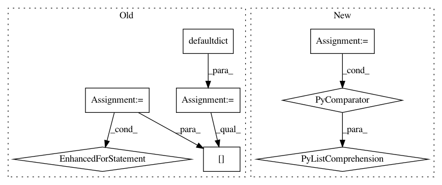

e144e814fa4b542fa70c5b4c167d1253a7a25342,skbio/maths/gradient.py,,make_groups,#Any#Any#Any#Any#,36
Before Change
// Creating groups
groups = defaultdict([])
// If sort_category is provided, we used the value of such category to sort
// otherwise we use the sample id
if sort_category:
sort_f = lambda sid: metamap.get_category_value(sid, sort_category)
else:
sort_f = lambda sid: sid
// Loop through all the sample ids present on the mapping file
for sid in metamap.sample_ids:
if sid not in ord_res.site_ids:
continue
// Get the group for the current sample
g = metamap.get_category_value(sid, vector_category)
// Add the current sample to the group
groups[g].append((sort_f(sid), sid))
// Sort the groups
for g in groups:
groups[g] = signed_natsort(groups[g])
return groups
After Change
gb = metamap_t.groupby(vector_category)
groups = {}
for g, df in gb:
groups[g] = signed_natsort([(sort_val(sid), sid) for sid in df.index])
return groups
In pattern: SUPERPATTERN
Frequency: 3
Non-data size: 8
Instances
Project Name: biocore/scikit-bio
Commit Name: e144e814fa4b542fa70c5b4c167d1253a7a25342
Time: 2014-04-29
Author: josenavasmolina@gmail.com
File Name: skbio/maths/gradient.py
Class Name:
Method Name: make_groups
Project Name: pfnet/optuna
Commit Name: f81184a1a925ec6afaa7388b306398252f7fa45f
Time: 2020-05-15
Author: phjgt308@gmail.com
File Name: tests/multi_objective/samplers_tests/test_nsga2.py
Class Name:
Method Name: test_population_size
Project Name: pantsbuild/pants
Commit Name: 705a3dcb90454c2d6ab2a857ac0b88dff2ef0bab
Time: 2020-08-16
Author: 14852634+Eric-Arellano@users.noreply.github.com
File Name: src/python/pants/core/goals/lint.py
Class Name:
Method Name: lint